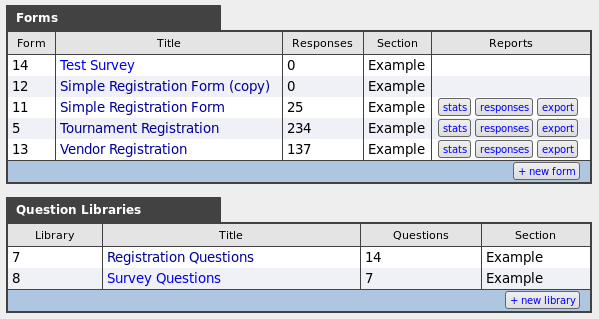
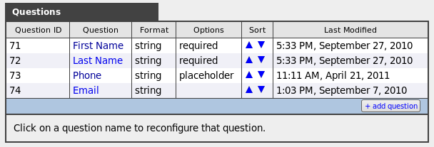

The Web Forms plug-in allows you to create, edit, and publish forms on your website, and use them to collect data for various purposes, including but not limited to:
Responses can be saved to the database and/or emailed to a list of addresses.
Familiarize yourself with the following terms and concepts before attempting to create or edit web forms.
Web forms are built around the concept of questions and answers received to those questions. Questions are arranged into groups so they can be presented together. A complete group of questions is a form and the complete set of answers received from a given user is a response. Every question can keep track of its translations into various languages, and automatically map answers back to the default language.
Questions are created and managed as generic, reusable questions in your question bank, which is broken down into several question libraries for organization purposes. This allows you to re-use common questions (eg. name, address, phone number, etc.) without having to re-create and translate them every time you need them. To create a form, you simply pick the questions you want from your question bank, from those that you have available. If the desired question is not availble in your question bank, you will need to make it, first.
The administration interface is divided into Forms and Libraries.

The functions are similarly divided into Form management and Library management, arrived at through these two reports. Creating forms is very easy if the questions are already available in your libraries. You may need to spend a little time adding useful questions to your libraries before you can set up some forms.
Additional information is available on:
Forms are for presenting a set of questions to the user, and processing their answers.
To create a new form, Click the + new form button. This takes you through a 4-step setup wizard.
Add questions to the form. Simply click on the questions to add them. Added questions will be marked with a checkmark, and will be added to the list of selected questions at the bottom. (Click on the red X to remove them.)
If your desired question does not exist in your libraries, use the
New Question tab to add it. Select the question type, and type in the
question itself. For multiple choice answers, you should provide all
of the possible answers, separated by a bar character, for
example yes|no|maybe. Select a library to categorize your
new question for organization purposes.
Before proceeding to the next step, check off the questions that should be required.
To manage a form or its responses, click on the form name in the list of forms you have available. You will be presented with a toolbar that has the following options:
Reponses can be viewed using the responses, filter, and export buttons in the form overview. Responses are listed in a table with the following columns:
This information can be exported to Excel using the link at the end of the report, or directly from the form overview using the export button.
Alternativly, use the stats button to see an overview of all responses, with charts showing the proportion of respondents who provided different answers.
From the questions button in the general form overview, you can get a table summarizing the questions on the form:

NOTE: the particulars of question phrasing, answer format, and so on are managed in your question libraries, not here. This is where you configure the question attributes that apply to this form only. If you want to change the general question details (on all forms that use it), you should use the link at the bottom to jump to the appropriate model question in your question bank.
A preview of the question is displayed at the top of the screen. You can also delete the question from the form, using the button here.
The question parameters than can be changed on this form are:
To remove the question from the form, click the Remove button. This will also remove any answers to that question that were received.
To restore the question to the form, without the original answers, simply add the question back in the normal way. To undo the removal, and restore all the removed answers as well, go to the Trash tool and restore the question from there.
At the bottom of the list of questions in the form overview is a link to add a new question to the form. Clicking this link brings you to a list of all known questions in your question libraries, grouped by library. Simply click on a question to add it to your form.
Repeat this procedure as many times as required to create the complete form.
If the desired question is not available, you can create it by clicking on the add a new question links at the bottom of each library's list of questions.
Note that question libraries will not be offered to you if the library type and the form type do not match. To make a one-time exception, change your form type to match the library type temporarily to add the question, then change it back to the correct value.
You can change the basic form beviours in the configure pane. This brings up the same questions you answered when you created the form.
Question libraries are for storing and organizing the questions that you will be using and re-using on various forms.
Creating a new question library is simple:
Select one of the libraries to manage the questions in it.
Your bank of reusable questions is organized into multiple libraries. The questions in each library are listed in a table, with a link to add a new question to this library. Click on one of the questions to review it in detail.
When reviewing a model question, you have five panes that can be expanded or collapsed:
If you click on one of the translations you will be taken to a screen where the translations can be updated. The default (English) version is shown at top, and the translated versions below. If no translation exists, the English version will be shown in its place. Simply replace or edit this to provide a proper translation.
Deleting the question moves the question to the trash, along with any instances of the question in forms, and their answers. This may damage active forms and responses. The forms that are using this question are shown to you so that you can decide whether deleting the question is safe.
To add a new question to a library so that it is available for use in your forms, click the + create new question link at the end of the list of questions in the library. You must specify:
yes|no. For regular text inputs, it is an ExSite datatype
that will define a regular expression the answer should match
(eg. "email" or "url").Forms will automatically be given a simple and versatile layout. If you need to customize this layout, you can create a custom form template as follows.
Your template is a block of HTML containing merge codes with the following format:
[[name:prompt]] [[name:input]]
where name is the short reference name of the question. For example,
if you are prompting for an email address, the short reference name of
the field may be email, and you can use the following merge
codes in the template:
[[email:prompt]] [[email:input]]
Where ever you place [[email:input]] in your template,
this will be replaced with the input field, such as
<input ...>. Where ever you place
[[email:prompt]] in your template, this will be replaced
with the question itself, such as Enter your email address:
You do not need to include the prompt merge code in the template. Instead, you could explicitly place the question text (or an image) into the template HTML, instead. If you do not include the input merge code in the template, the question will automatically be appended to the bottom of the template.
Some inputs consist of multiple related input fields; for example checklists and radio buttons have numerous inputs that are presented in a row. If you want to place these sub-inputs individually, they are numbered starting at 1, and you can place them individually using:
[[name:input:N]]
where N is the number of the sub-input. Note that this only places the sub-input, not any text that goes along with the sub-input.
Once you have your block of template HTML, save it to a content
object somewhere in your website. (For instance, create a content
object called registration_form_template and place this
into a convenient content library.) Then type the name of this content
object into the template field of the form configuration
screen. ExSite will then attempt to find this named template and use
it to format your form.
The default layout gives you a plain but legible layout that will suffice for basic tasks. You can switch a richer CSS-based layout with the following configuration setting:
template = 1
With this setting, you can enhance your form styles using the following CSS classes:
| CSS class | description |
|---|---|
div.QA_prompt | Wraps the question prompts/labels. |
div.QA_input | Wraps the question input field. |
div.QA_question | Wraps the prompt + input. |
div.A, div.B | Wraps alternating questions. |
The last CSS classes (div.A, div.B) are optional.
You can enable alternate row highlighting using the following conf
setting:
highlight_rows = 1
When possible, the system will try to enhance your form layout by grouping questions with similar inputs. For example, if you have three questions in a row with the same set of radio button answers, then instead of the default layout, which would be:
Question 1
( )A ( )B ( )C
Question 2
( )A ( )B ( )C
Question 3
( )A ( )B ( )C
the system will reformat to present these questions as:
| A | B | C | |
|---|---|---|---|
| Question 1 | ( ) | ( ) | ( ) |
| Question 2 | ( ) | ( ) | ( ) |
| Question 3 | ( ) | ( ) | ( ) |
This helps to automatically group similar questions in surveys and other long forms, to keep things more organized. To take advantage of this feature, simply make sure that these questions are adjacent to each other in the form. If you have adjacent questions that you do not want grouped in this way, put a label or preformatted question in between them.
In the form configuration, you have a few security options to control who may use the form.
By default, when a form is successfully submitted, the system will return a simple "Thank You". You can specify a custom reply message in the form configuration screen.
The custom reply message can include HTML mark-up, and also merge fields
that will be replaced with appropriate data when displayed to the user.
Merge fields are written like this: [[name]], where name
is any of:
Thank you for your input, [[first_name]].The default response handling of a form is:
Any additional action or follow-up is the responsibility of the persons receiving the notification email.
For simple data collection or survey-style forms, this is usually sufficient. The data is accumulated in the database for later analysis and reporting.
If you require special automated processing of the form data, there is a hook in the system for you to add your own code. Follow this procedure:
myConfig.pm file, add a handler for QA_receipt
# in myConfig.pm
sub my_handlers {
my $this = shift;
# install a handler for QA forms
$this->handler("QA_receipt",\&my_qa_receipt);
}
sub my_qa_receipt {
my ($this,$form,$response) = @_;
# $form is a QA form object
# $response is a QA response object
# the return value from this routine is assumed to be an HTML
# message that is displayed to the user
my $output_message;
# to take action on specific forms, you need to check the form name
my $formname = $form->getdata("name");
if ($formname eq "my_registration_form") {
# fetch the response data as a hash of short reference name => answer
my %response_data = $response->get_response_data();
# ... perform any special functions that are needed based on
# the response data
}
# return any status messages to be displayed to the user
return $output_message;
}